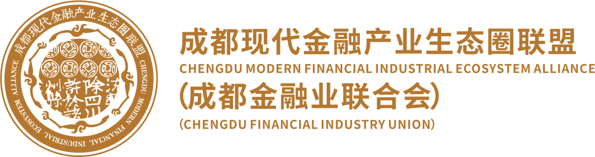
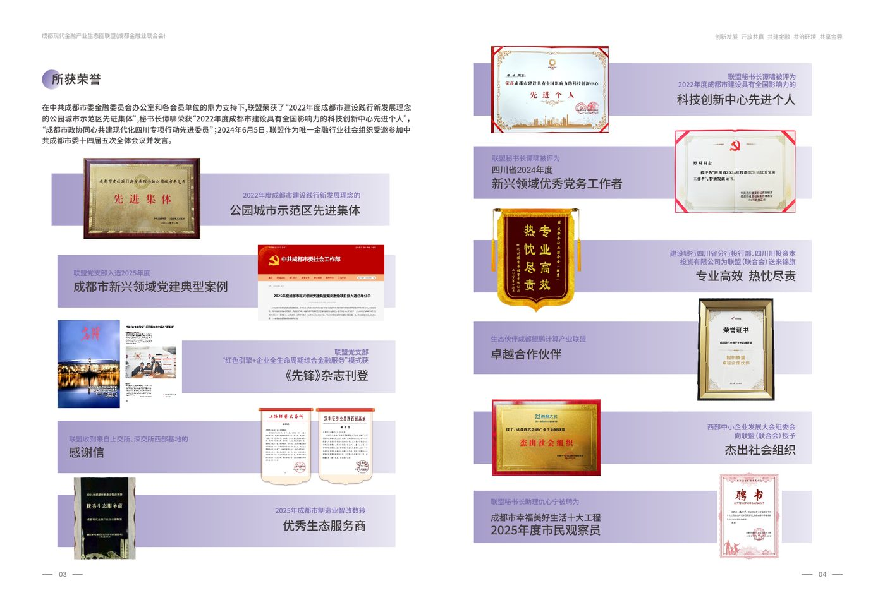

发挥金融行业社会组织桥梁纽带作用，链接政府、金融机构、产业企业、高校院所及专业服务机构，共建成都现代金融产业生态。
成都现代金融产业生态圈联盟（成都金融业联合会）围绕成都现代金融产业生态圈建设，持续开展政金合作、产融对接、政策传播、研究咨询、人才培养、会员服务及行业宣传等工作，推动金融资源与实体经济高效连接。

获成都市相关先进集体荣誉。
获得生态伙伴与行业大会相关荣誉。
荣获成都市制造业智改数转优秀生态服务商等荣誉。